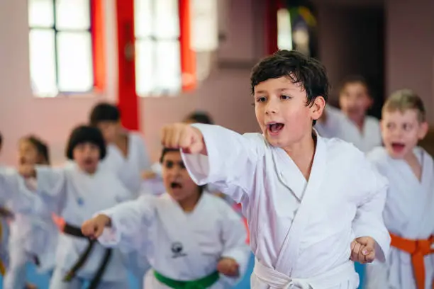
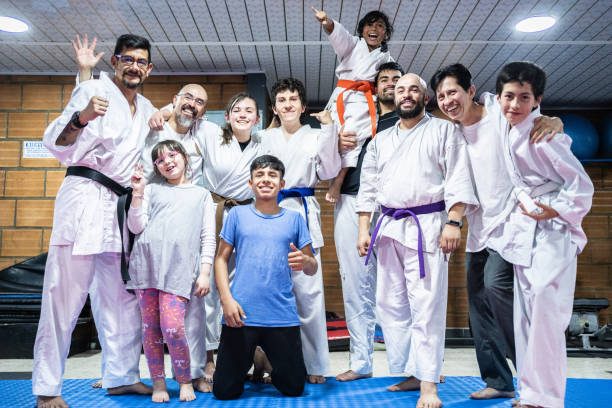

Las Artes marciales y su impacto en las personas
Las artes marciales son nuna gran forma de traer diciplina y ejercicio a las personas ya ayudan a maximizar el potencial tanto mental como deportivo de tanto niños como adultos
La práctica de artes marciales no solo se trata de aprender técnicas de defensa personal, sino que también inculca valores fundamentales como la disciplina, el respeto y la autocontrol desde una edad temprana. A través de la rigurosa rutina de entrenamiento y la guía de los maestros, los niños aprenden a establecer metas, a perseverar frente a los desafíos y a respetar a sus compañeros y superiores.
Al seguir un código de conducta estricto y enfrentarse a situaciones difíciles durante la práctica, los niños aprenden a controlar sus impulsos y a mantener la calma en cualquier situación. Además, las artes marciales fomentan la humildad al reconocer que siempre hay más por aprender y mejorar.
La práctica de artes marciales ofrece a los jóvenes y adolescentes mucho más que simplemente habilidades físicas. Es una experiencia transformadora que moldea no solo sus cuerpos, sino también sus mentes y espíritus.
En un mundo donde el estrés y las distracciones pueden ser abrumadoras, las artes marciales ofrecen un refugio de calma y enfoque. A través del entrenamiento regular, los jóvenes aprenden a disciplinar sus mentes y cuerpos, desarrollando habilidades como la concentración, la determinación y la autoconfianza que son invaluables en todas las áreas de la vida.
En un mundo donde el tiempo es escaso y las demandas diarias pueden separar a la familia, las artes marciales ofrecen una oportunidad única para unirnos y compartir una pasión. Al entrenar juntos, los adultos y sus seres queridos fortalecen vínculos, enfrentan desafíos y celebran logros. Además, practicar regularmente les permite desconectar del estrés diario y mejorar su bienestar físico y mental, desarrollando habilidades como la concentración y la autoconfianza.
